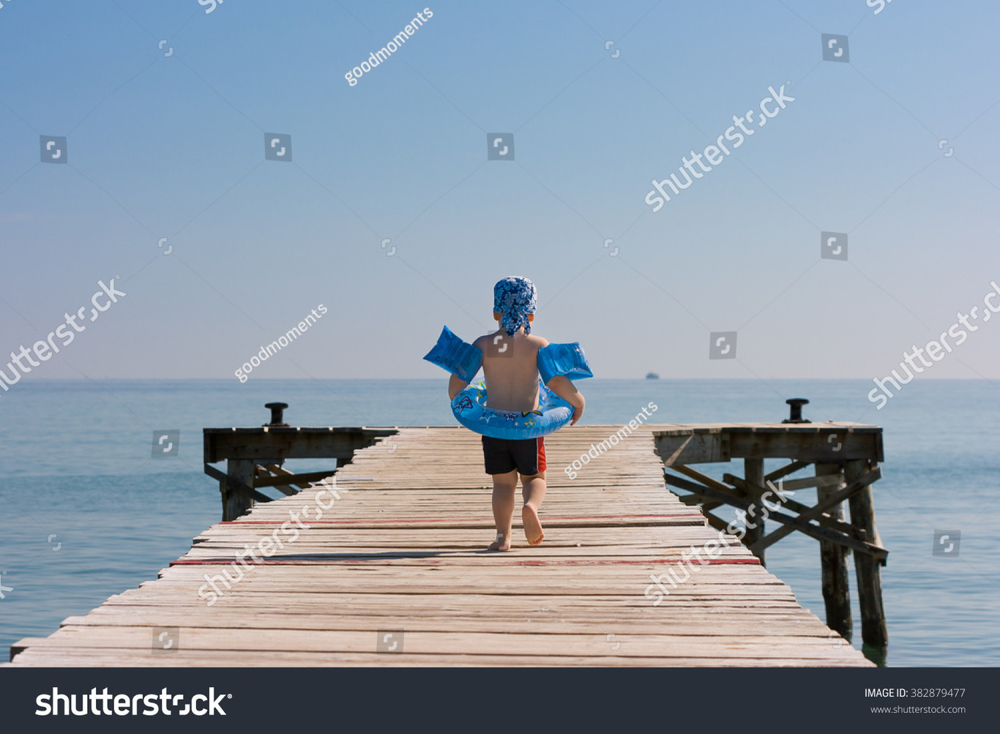
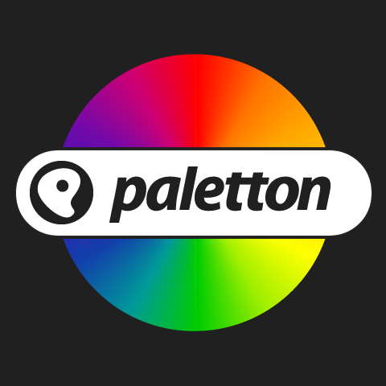

1. ORDENA EL CONTINGUT
Quan tinguis tota la informació del treball fet, has de saber posar ordre a la informació.
2. LA REGLA DEL 4
Màxim 4 imatges o conceptes per diapositiva
3. UN TEMA O IDEA PER DIAPOSITIVA
Cada vegada que introdueixis un apartat o tema nou, afegeix una diapositiva nova. Així també es compleix la regla anterior.
4. UTILITZA PARAULES O TEXTOS CURTS
La presentació és una ajuda visual a l'explicació oral del treball.
Si és un concepte important, pots escriure'l per donar èmfasi i importància, però si no és important, no el posis, utilitza recursos gràfics o paraules que resumeixin la idea.
5. UTILITZA IMATGES O VÍDEOS
Si pots posar una imatge o un vídeo que resumeixi visualment un text, fer-ho.
Com ja hem dit abans, la presentació és una ajuda visual a l'explicació oral del treball i els oients han d'estar atents a la teva explicació i no han de llegir una pantalla. Pensa que si han de llegir, no podran escoltar amb atenció tot el que has de dir.
6. UTILITZA IMATGES DE QUALITAT I AMB PERMÍS DELS AUTORS
A Internet hi ha moltes imatges, però no totes són de qualitat. Per exemple, no utilitzis imatges amb marques d'aigua o amb una resolució baixa. A continuació t'ensenyem imatges que NO hauries d'utilitzar.

Molt important, busca les imatges des de pàgines que permetin utilitzar-les sense drets d'autor. A continuació et deixo unes pàgines on pots trobar imatges i vídeos gratis sense drets d'autor.
7. MENYS ÉS MÉS.
No carreguis les diapositives, recorda les primeres imatges de l'apartat "Benvinguda"
8. ESCULL UN DISSENY PER TOTA LA PRESENTACIÓ
El conjunt de les diapositives ha de seguir un mateix disseny i gamma cromàtica (colors), així els oients no perden el fil de la presentació.
Per obtenir uns dissenys pots ajudar-te de les plantilles que t'ofereixen els diferents programes.
Si vols fer un disseny creat per tu, és important la combinació de colors, no tots els colors combinen si els poses junts, per això és important utilitzar la paleta de colors. Et deixo una pàgina on podràs obtenir combinacions de colors per fer els teus dissenys.

9. MODEL PECHAKUCHA
És un format de presentació amb la qual s'exposa de manera senzilla i informal.
La consigna és fer una presentació de 20 diapositives amb una durada de 20 segons cada una.
10. LA REGLA DEL 25
Tots els textos d'una presentació han de tenir com a mínim 25 punts de mida.
Pensa que una vegada exposis la presentació la de veure el teu company o companya de l'última fila.
És el conjunt de normes i principis que afirmen els drets morals i patrimonials que concedeix la llei als autors, per la creació d'una obra literària, artística, musical, científica o didàctica.